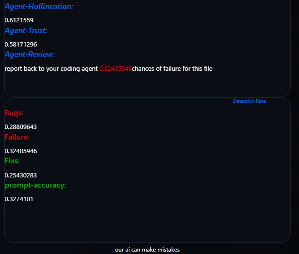
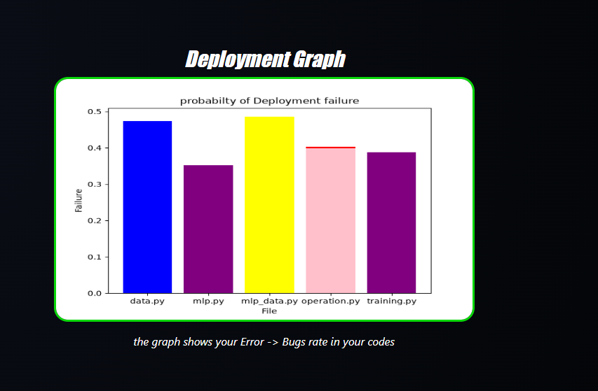
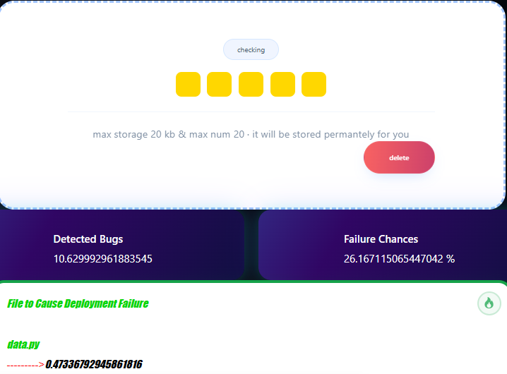

Explore the comprehensive toolkit built directly into OmniSignal for absolute control over insights.
OmniSignal handles high-frequency multiplexing, stability, and Analysis routing seamlessly across multi-core processors.


realtime built-in graphics statistical suite, performance graphs, packet inspection tools, and log export options.
users can monitor their code progress, automation workflows, and analyse directly within the desktop application.
